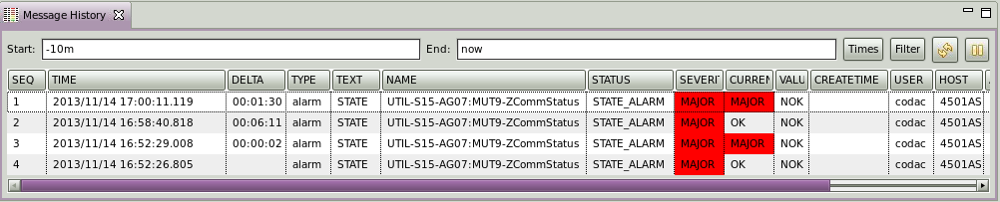

Message History
- Overview
- Properties
- Setting Start/End Time and Filter
- Automatic/manual refresh
- Preferences Configuration
Overview
The Message History provides a tabular view of the CSS message log.
It lists events from the alarm system as well as other CSS applications,
identified by a Message TYPE.
- TYPE="alarm":
- A new alarm triggered
- The state of an alarm changed
- Operator acknowledged/un-acknowledged an alarm
- Alarm system related operation, for example: set the PV configuration
- TYPE="talk":
- An annunciation was generated
- TYPE="log":
- Informational messages: Application started, ...
- Application Error messages
You can open the Message History View via the menu item
CSS/Alarm/Message History

Properties
Each Message has several Properties, depending on the message type.
Per default, messages are listed by time, but you can sort on any Property
by clicking the corresponding column header.
Click again to sort in the "other" direction (ascending, descending).
If you double-click a Message, the "Properties" View will display all
the Properties of a Message,
including those that might not be listed in the table.
Explanation of most Properties:
- ID: Message identifier in the database.
- TIME: Time when the event was logged to the database.
- DELTA: Elapsed time from one event to next event.
- TYPE: Type of the event.
- TEXT: Informational text that describes the event.
- NAME: For an event related to a PV, this is the name of the PV. For error messages, this is the source code function which detected the error.
- SEVERITY: Severity of the alarm (OK, MINOR, MAJOR, INVALID) or error message (DEBUG, WARN, INFO, ERROR, FATAL).
- STATUS: Alarm status message.
- CURRENT_SEVERITY: Current Severity of the PV which triggered an alarm.
- VALUE:Value of the PV triggered the alarm.
- CREATETIME: When the event was created.
- EVENTTIME: For an alarm event, this is the time when the alarm in this severity was generated. ACK or Un-ACK will be ignored in this case.
- USER: The user who was running the application that produced the event.
- HOST: The host machine on which the application that produced the event was running.
- APPLICATION-ID: The name of the application which produced the event.
- CLASS & FILENAME: the class name and source file name from where the event was generated. These two properties are used for debug purpose.
Setting Start/End Time and Filter
By clicking the "Times" button, a dialog will allow you to specify the
start and end time of the displayed message history.
Note that there is an internal limit to the amount of messages
retrieved from the database to prevent excessive memory consumption:
There might be more messages between the last displayed message
and the selected "end" time!
By clicking the "Filter" button, you can set the rule in filtering the messages
you are interested in.
You can select the property and set its desired value.
There are up to five properties you can set.
The value patterns support SQL wildcards '%, '_'.
For example, filtering on
TYPE="alarm" and NAME="%Vac%" will show only alarm messages
for PVs with "Vac" in their name for the selected time range.
Automatic Refresh
Preference settings allow to set auto-refresh period in seconds to reload message history view from RDB.
When the refresh period is > 0 second, then a RDB request will be triggered periodically to display the new messages.
If this period is set to 0 or if the end time is not set to "now", there is no automatic refresh.
It possible to force a refresh using panel button "manual refresh"  .
Finally, it is possible to pause the auto-refresh using the pause button
.
Finally, it is possible to pause the auto-refresh using the pause button  .
.
Preference Settings
Preference settings determine where the message history is obtained and
how it is displayed.
The preferences configuration panel can be opened via the menu
CSS/Preferences...,
then navigating to
CSS Applications/Alarm/Message History.

- RDB URL: Database which holds the message log.
- User: User name to access the database.
- Password: Password for the user.
- Schema: Schema name in the database.
- Start time: Start time used to filter on message history
- Auto refresh period: Refresh period to reload message history from db
- Message Property Columns: List of displayed Table Columns
(Message Property, widths, weight).